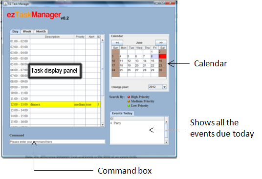
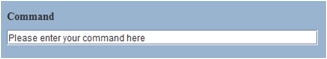
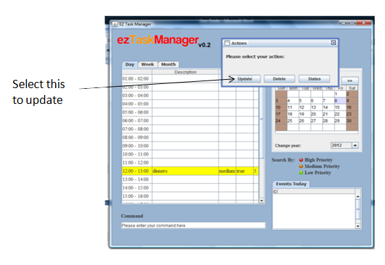
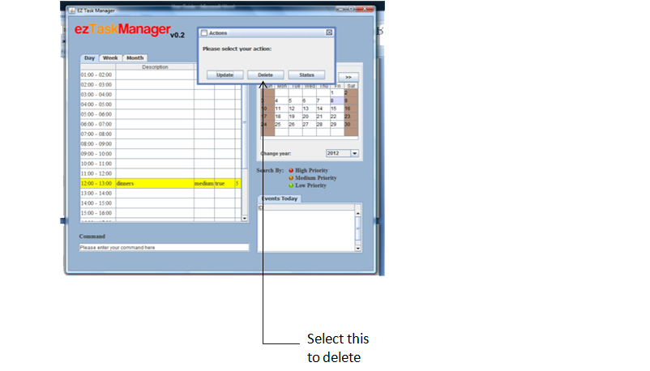
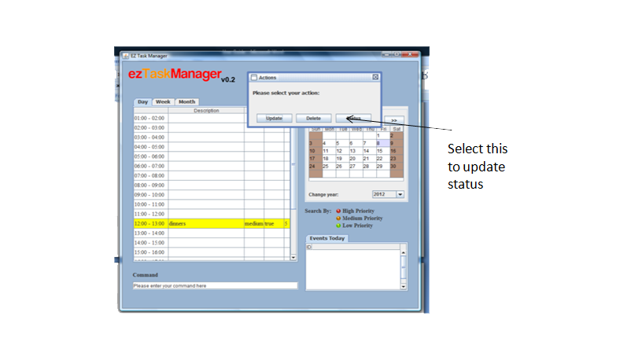
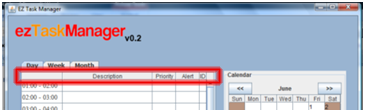
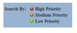
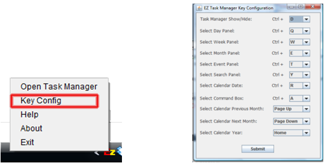

Ez Task Manager User Guide
User Interface
How to Create Task/Event
How to Update Task/Event Status
How to Use Task Searching Function
How to Set Recipient Email Address of Reminder Email
How to Set Recipient Handphone No of Reminder SMS
How to Set Short Cut Key Setting


To create a task, the user must type in ‘add’ or 'a' in the command box. This prompts the user to enter the description of the task eg. Jogging. Next the user is asked to enter the date of initiation followed by the date of termination. Type in the same date if the task ends that very day. The software then asks the user to set the time allocated for the task followed by its priority level (high, medium, low). The final step for creating a task is to set an alert (true/false) for it.
To create an event is also created in a similar way except that the time slot will be appointed as 'nil'.
Once the user has successfully added a task or an event, he/she can also update it should he/she choose to do so. The existing task or an event can be updated by left clicking the task or pressing the space bar key. This prompts an action box. The user should select the ‘Update’ tab. The command box will display the update command and the user can modify any detail of the selected task.

A task or an event can be deleted by selecting the particular task/event and by clicking the ‘delete’ tab in it.

How to Update Task/Event Status
The Update status renders a task or an event active or inactive. This is achieved by selecting the desired task/event and clicking the ‘Update’ tab in the action box that pops up in front you. The user can then change the task status to active or inactive.

There are three type of sorting of the tasks mainly sort by date, by description and by priority.
To sort a list of task by date, Left click on the table date column header.
To sort a list of task by description, Left click on the table description column header.
To sort a list of task by priority, Left click on the table priority column header.

How to Use Task Searching Function
Existing tasks and events in the ezTask Manager can be searched by three different criterions namely by description, by the priority level assigned to the task and by its active or inactive status. To search by description, the User must type in ‘s’ in the command box and press enter followed by typing in the desired description. This displays all the tasks that contain the description entered by the user.
Tasks can be searched by priority by entering ‘s-p’ in the command box followed by the priority of the tasks we intend to find. Eg. Low.
An alternative way is to click on any of the three icons of the priority.

Active or inactive tasks are searched by entering ‘s-s’ in the command box followed by ‘active’ or ‘inactive’.
How to Set Recipient Email Address of Reminder Email
To set the recipient email address of reminder email, type 'e [your email address]'.
How to Set Recipient Handphone No of Reminder SMS
To set the recipient handphone number of reminder sms, type 'e [your handphone no]'.
How to Set Short Cut Key Setting
The keyboard shortcuts can also be configured as per the needs and convenience of the user. This can be done by right clicking on the ezTask Manager icon on the system tray and selecting the ‘Key Config’ tab. The user can then make the changes accordingly and click the submit button to save the changes.

Ctrl d – Show or hide Task Manager
Ctrl q – focus on the Day display panel
Ctrl w – focus on the Week display panel
Ctrl e – focus on the Year display panel
Ctrl y – focus on the Search display panel
Ctrl t – focus on the Event display panel
Ctrl a – focus on the command box
Ctrl r – focus on the Calendar Date (after that press a few time of any arrow key)
Page Up – focus on the calendar prev month button then press enter
Page Down – focus on the calendar next month button then press enter
Home – focus on the calendar year combo box then press enter
SPACEBAR – to active the ACTION POP UP MENU which consists of the update, delete and status buttons
Esc key – close the ACTION POP UP MENU
Shift + backspace = backspace
For any further enquries please contact us at u0907074@nus.edu.sg